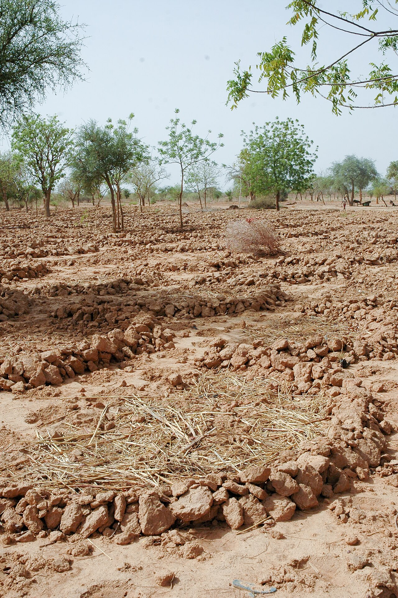
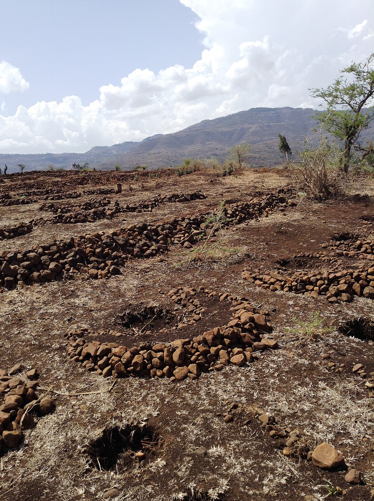

Semi-circular bunds
Crescent earth or stone bunds that pond runoff around trees, shrubs and crops

What it is
Semi-circular bunds – also called half-moons or, in the Sahel, demi-lunes – are crescent-shaped banks of earth or stone built across a gentle slope with their open ends (the two tips) pointing upslope. Each crescent catches the thin sheet of rainwater that runs off the bare ground above it and ponds it inside the basin, where it soaks in around a planted tree, shrub or patch of crop instead of running away and eroding the soil (Oweis, 2001; Mekdaschi Studer & Liniger, 2013).
They are one of the workhorse micro-catchment techniques of the drylands: cheap, built by hand or by tractor, and used from rangeland restoration in the Sahel and the Near East to olive and fruit orchards. In the WOCAT classification they belong to the micro-catchment water-harvesting group, where a short bare catchment feeds runoff onto an immediately adjacent planted area.
How it works
- Set the crescents out on the contour, tips pointing upslope, in staggered (offset) rows so each row catches what passes between the bunds above it
- Build the bund high and firm enough to hold the design storm without overtopping; on stony ground use stacked stone instead of earth
- Size the bare catchment above to the planted area inside using the catchment-to-cultivated ratio, so the harvested water matches the plant's need and the soil can store it (Oweis, 2001)
- Plant trees, shrubs or fodder at the lowest point of each basin where water collects; mulch the basin to cut evaporation
- Keep animals off while plants establish, and repair the bunds after each major storm
Key facts
- WOCAT group
- Micro-catchment water harvesting
- Catchment : cultivated
- ~1:1 to 10:1
- Suitable slope
- ~1–15%
- Soil depth
- ≥ 100 cm (room to store water)
- Soil texture
- loam to clay loam
- Spacing (trees)
- bunds ~5–10 m apart
- Best for
- trees, shrubs, fodder, orchards, rangeland restoration
- Construction
- manual (low cost, high labour) or mechanized
Design parameters from Oweis (2001) and the FAO water-harvesting manual (Critchley & Siegert, 1991); classification from Mekdaschi Studer & Liniger (2013).

The technique only works if the bare catchment above each bund is large enough to deliver the water the plant needs – but not so large that storms breach the bund. In drier years or on smooth, low-runoff ground the catchment is enlarged or its surface compacted to induce more runoff; where rainfall is higher, a smaller catchment is enough.
Two main forms & a larger cousin
- Earth half-moons (demi-lunes) – hand- or tractor-built earth crescents; the classic Sahelian form for restoring bare, crusted land (Burkina Faso, Niger).
- Stone semi-circular bunds – stacked-stone crescents for stony or steeper slopes, common in the Near East and the Ethiopian highlands.
- Large semi-circular bunds – the same shape built bigger, to harvest runoff from a longer external slope; WOCAT classes these under macro-catchment harvesting.
WOCAT classification
- Measures
- SVStructural · Vegetative
- WOCAT group
- Micro-catchment water harvesting
- Degradation addressed
- Water degradation (aridification)Soil erosion by water
Classified per the WOCAT SLM-Technologies classification and the four water-harvesting groups of Mekdaschi Studer & Liniger (2013).
✦Source and links
Drawn from the FAO / ICARDA Webinars Series on Rainwater Harvesting (NENA region, 2022), where this technique is described across several sessions:
- • Theib Oweis (ex-ICARDA) – Module 1 “Setting the scene” and Module 4 “Designing micro-catchment RWH systems” (design parameters, catchment-to-cultivated ratio)
- • Rima Mekdaschi-Studer & Hanspeter Liniger (WOCAT) – Modules 1 & 2 (the four water-harvesting groups)
- • Abdelmadjid Boulassel (INRAA, Algeria) – Module 1, half-moon variants
- • Ihab Jnad (ACSAD) – Module 7, rangeland applications in Jordan, Saudi Arabia and Syria
- • Wael Abu Rmaileh (UN-ESCWA) – Module 8, Palestine case study
Sources (APA, 7th ed.).
- Critchley, W., & Siegert, K. (1991). Water harvesting: A manual for the design and construction of water harvesting schemes for plant production. FAO. Link
- Mekdaschi Studer, R., & Liniger, H. (2013). Water harvesting: Guidelines to good practice. CDE/Bern, RAIN, MetaMeta, IFAD. Link
- Oweis, T., Prinz, D., & Hachum, A. (2001). Water harvesting: Indigenous knowledge for the future of the drier environments. ICARDA.
- FAO / ICARDA. (2022). Webinars series on rainwater harvesting (WEPS-NENA / Water Scarcity Initiative). Series flyer (PDF)